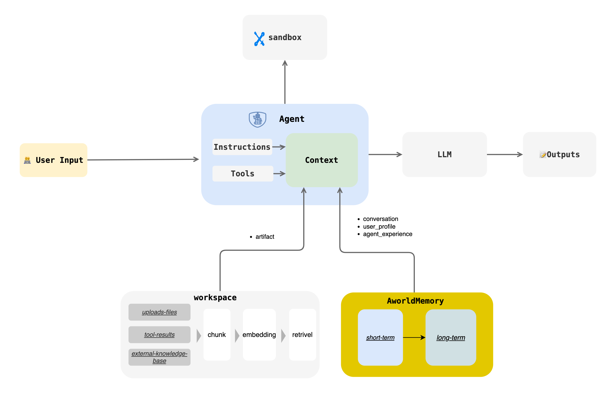

Memory¶

Introduction¶
The Aworld Memory module provides a unified memory management mechanism for multi-agent systems. It is designed to enable agents to store, retrieve, and process information, thereby facilitating continuous learning and personalized interactions. The module supports both short-term and long-term memory and offers flexible configuration options to suit various application scenarios.
Key features include:
- Short-Term Memory: For quick access to recent interaction content, with various summarization strategies to control context length.
- Long-Term Memory: Persistently stores key information through structured UserProfile and AgentExperience models, enabling agents to learn and grow across sessions.
- Flexible Backend Support: Supports various vector databases and data storage backends, such as ChromaDB and PostgreSQL.
- Customizable Configuration: Provides detailed configuration options, allowing developers to tailor memory behavior to their needs.
Core Concepts¶
Short-Term Memory¶
Short-term memory is used to store immediate interaction records, such as User2Agent, Agent2Agent, and interactions between an Agent and LLM/Tool. It centrally stores all messages through a unified MemoryStore (e.g., InMemoryMemoryStore) and provides the get_last_n(last_rounds) method to quickly retrieve the latest N messages.
Summarization Strategy¶
To optimize performance and manage context length, the system includes several automatic summarization strategies:
| Strategy | Description | Configuration |
|---|---|---|
| Trimming Strategy | Keeps only the most recent N rounds of conversation. |
trim_rounds=100 (default) |
| Fixed Step Summary | Creates a summary every N messages, retaining only the summary. |
enable_summary=truesummary_rounds=5 |
| Fixed Context Length Summary | Compresses the conversation history when the total length of unsaved messages exceeds a threshold. | enable_summary=truesummary_context_length=10000 |
| Current Round Summary | Compresses the current conversation when the length of the latest message exceeds a threshold. | enable_summary=truesummary_single_context_length=10000 |
Long-Term Memory¶
Long-term memory enables continuous learning and personalized interactions through two main types: UserProfile and AgentExperience.
UserProfile¶
UserProfile systematically captures and stores user information, preferences, and behavioral patterns in a key-value structure to build a detailed user profile.
class UserProfileItem(BaseModel):
key: str = Field(description="The key of the profile")
value: Any = Field(description="The value of the profile")
class UserProfile(MemoryItem):
"""
Represents a user profile key-value pair.
"""
def __init__(self, user_id: str, key: str, value: Any, metadata: Optional[Dict[str, Any]] = None) -> None:
meta = metadata.copy() if metadata else {}
meta['user_id'] = user_id
user_profile = UserProfileItem(key=key, value=value)
super().__init__(content=user_profile, metadata=meta, memory_type="user_profile")
AgentExperience¶
AgentExperience focuses on capturing the skills and action sequences an AI agent acquires during task execution. It records problem-solving patterns in a skill-actions structure, allowing the agent to learn from past experiences and improve future performance.
class AgentExperienceItem(BaseModel):
skill: str = Field(description="The skill demonstrated in the experience")
actions: List[str] = Field(description="The actions taken by the agent")
class AgentExperience(MemoryItem):
"""
Represents an agent's experience, including skills and actions.
"""
def __init__(self, agent_id: str, skill: str, actions: List[str], metadata: Optional[Dict[str, Any]] = None) -> None:
meta = metadata.copy() if metadata else {}
meta['agent_id'] = agent_id
agent_experience = AgentExperienceItem(skill=skill, actions=actions)
super().__init__(content=agent_experience, metadata=meta, memory_type="agent_experience")
API Reference¶
Core interactions with the Memory module are defined by the MemoryBase abstract class, which provides a unified interface for memory operations.
from aworld.core.memory import MemoryBase, MemoryItem, AgentMemoryConfig
from aworld.memory.models import UserProfile, AgentExperience, LongTermMemoryTriggerParams
class MemoryBase(ABC):
@abstractmethod
def get(self, memory_id) -> Optional[MemoryItem]: ...
@abstractmethod
def get_all(self, filters: dict = None) -> Optional[list[MemoryItem]]: ...
@abstractmethod
def get_last_n(self, last_rounds, ...) -> Optional[list[MemoryItem]]: ...
@abstractmethod
async def add(self, memory_item: MemoryItem, ...): ...
@abstractmethod
def search(self, query, ...) -> Optional[list[MemoryItem]]: ...
@abstractmethod
async def trigger_short_term_memory_to_long_term(self, params: LongTermMemoryTriggerParams, ...): ...
@abstractmethod
async def retrival_user_profile(self, user_id: str, user_input: str, ...) -> Optional[list[UserProfile]]: ...
@abstractmethod
async def retrival_agent_experience(self, agent_id: str, user_input: str, ...) -> Optional[list[AgentExperience]]: ...
@abstractmethod
def update(self, memory_item: MemoryItem): ...
@abstractmethod
def delete(self, memory_id): ...
Usage Examples¶
Initializing Memory¶
It is recommended to use MemoryFactory to initialize and access Memory instances.
from aworld.memory.main import MemoryFactory
from aworld.core.memory import MemoryConfig, MemoryLLMConfig
# Simple initialization
memory = MemoryFactory.instance()
# Initialization with LLM configuration
MemoryFactory.init(
config=MemoryConfig(
provider="aworld",
llm_config=MemoryLLMConfig(
provider="openai",
model_name=os.environ["LLM_MODEL_NAME"],
api_key=os.environ["LLM_API_KEY"],
base_url=os.environ["LLM_BASE_URL"]
)
)
)
memory = MemoryFactory.instance()
Using Short-Term Memory¶
The following example demonstrates how to use different message types (MemorySystemMessage, MemoryHumanMessage, MemoryAIMessage, MemoryToolMessage) to construct a conversation and store it in short-term memory.
import os
from aworld.memory.main import MemoryFactory
from aworld.memory.models import (
MemorySystemMessage,
MemoryHumanMessage,
MemoryAIMessage,
MemoryToolMessage,
MessageMetadata,
)
from aworld.models.model_response import ToolCall
from aworld.core.memory import MemoryConfig
# Example setup: Initialize MemoryFactory if not already done.
# This is usually done once at application startup.
if not MemoryFactory.is_initialized():
# A default configuration for demonstration purposes.
# In a real application, you would configure this properly.
MemoryFactory.init(
config=MemoryConfig(provider="aworld")
)
# 1. Get a Memory instance
memory = MemoryFactory.instance()
# 2. Define common metadata for the conversation
metadata = MessageMetadata(
user_id="user-123",
session_id="session-abc",
task_id="task-xyz",
agent_id="agent-007",
agent_name="ToolAgent"
)
# 3. Create and add different types of messages to build a conversation flow
# System message to set the agent's context
system_message = MemorySystemMessage(
content="You are a helpful assistant that can access tools.",
metadata=metadata
)
memory.add(system_message)
# User's message (Human)
human_message = MemoryHumanMessage(
content="What's the weather like in London and what is 2+2?",
metadata=metadata
)
memory.add(human_message)
# AI's response indicating it will use tools
ai_message = MemoryAIMessage(
content="I can help with that. I'll use my tools to get the weather and perform the calculation.",
tool_calls=[
ToolCall(id="call_weather_1", function_name="get_weather", function_arguments='{"city": "London"}'),
ToolCall(id="call_calc_2", function_name="calculator", function_arguments='{"expression": "2+2"}')
],
metadata=metadata
)
memory.add(ai_message)
# Results from the tool calls
tool_message_1 = MemoryToolMessage(
tool_call_id="call_weather_1",
content='{"temperature": "15°C", "condition": "Cloudy"}',
status="success",
metadata=metadata
)
memory.add(tool_message_1)
tool_message_2 = MemoryToolMessage(
tool_call_id="call_calc_2",
content='{"result": 4}',
status="success",
metadata=metadata
)
memory.add(tool_message_2)
# 4. Retrieve the conversation history
# The memory store is currently in-memory, so we can retrieve all items.
conversation_history = memory.get_all(filters={"session_id": "session-abc"})
print("--- Conversation History ---")
for msg in conversation_history:
print(f"Role: {msg.role}, Content: {msg.content}")
if isinstance(msg, MemoryAIMessage) and msg.tool_calls:
for tc in msg.tool_calls:
print(f" -> Tool Call: {tc.function_name}({tc.function_arguments})")
Advanced Configuration¶
MemoryConfig allows you to integrate different embedding models and vector databases.
Using Custom Embedding and VectorDB¶
from aworld.core.memory import MemoryConfig, MemoryLLMConfig, EmbeddingsConfig, VectorDBConfig
MemoryFactory.init(
config=MemoryConfig(
provider="aworld",
llm_config=MemoryLLMConfig(
provider="openai",
model_name=os.environ["LLM_MODEL_NAME"],
api_key=os.environ["LLM_API_KEY"],
base_url=os.environ["LLM_BASE_URL"]
),
embedding_config=EmbeddingsConfig(
provider="ollama", # or huggingface, openai, etc.
base_url="http://localhost:11434",
model_name="nomic-embed-text"
),
vector_store_config=VectorDBConfig(
provider="chroma",
config={
"chroma_data_path": "./chroma_db",
"collection_name": "aworld",
}
)
)
)
Using PostgreSQL as a Backend¶
from aworld.memory.db import PostgresMemoryStore
# Initialize the PostgreSQL store
postgres_memory_store = PostgresMemoryStore(db_url=os.getenv("MEMORY_STORE_POSTGRES_DSN"))
# Pass the custom memory store during Factory initialization
MemoryFactory.init(
custom_memory_store=postgres_memory_store,
config=MemoryConfig(
# ... other configurations
)
)
Agent Memory Configuration¶
You can fine-tune an agent's memory behavior using AgentMemoryConfig. After defining the configuration, pass it to the Agent instance during initialization.
import os
from aworld.agents.llm_agent import Agent
from aworld.config import AgentConfig
from aworld.core.memory import AgentMemoryConfig, LongTermConfig
# 1. Define the AgentMemoryConfig
agent_memory_config = AgentMemoryConfig(
# Enable short-term memory summarization
enable_summary=True,
summary_rounds=5,
summary_context_length=8000,
# Keep the last 20 rounds of conversation
trim_rounds=20,
# Enable long-term memory to store user profiles and agent experiences
enable_long_term=True,
long_term_config=LongTermConfig.create_simple_config(
application_id="my-awesome-app",
enable_user_profiles=True,
enable_agent_experiences=True
)
)
# 2. Define the agent's main configuration using AgentConfig
# (Ensure your environment variables for the LLM are set)
agent_conf = AgentConfig(
llm_provider="openai",
llm_model_name=os.environ.get("LLM_MODEL_NAME", "gpt-4"),
llm_api_key=os.environ.get("LLM_API_KEY"),
llm_base_url=os.environ.get("LLM_BASE_URL")
)
# 3. Initialize the Agent, passing the memory configuration
my_memory_agent = Agent(
conf=agent_conf,
name="MyMemoryAgent",
system_prompt="You are an agent with advanced memory capabilities.",
agent_memory_config=agent_memory_config # Pass the config here
)
# Now, `my_memory_agent` will use the specified memory settings when it runs.
# For example, it will automatically create summaries and extract long-term memories.